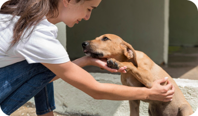

Transformando Vidas, Um Amigo Peludo de Cada Vez
Na Proteção Peluda, acreditamos que cada animal merece um lar cheio de amor. Estamos aqui para conectar animais abandonados a pessoas com corações abertos, ajudando a construir lares felizes e vidas transformadas.
Missão
Nossa missão é conectar animais em situação de vulnerabilidade com lares amorosos, promovendo a adoção responsável e conscientizando a sociedade sobre a importância do cuidado e respeito aos animais. Queremos transformar vidas, tanto de animais quanto de pessoas, através do ato de adoção.
Visão
Nossa visão é ser referência nacional em adoção de animais, proporcionando um mundo onde todos os pets tenham um lar seguro e amoroso. Buscamos criar uma comunidade engajada que valorize e proteja a vida animal, inspirando mudanças positivas nas políticas públicas e na cultura de adoção.
Valores
Compromisso com o bem-estar animal, incentivando a adoção responsável e demonstrando empatia e respeito por todos os animais. Atuamos com transparência e promovemos a colaboração para alcançar os melhores resultados para nossa comunidade e os animais que cuidamos.
História da Proteção Peluda:
2018:Fundação da Proteção Peluda
Tudo começou em 2018, quando um grupo de amigos apaixonados por animais decidiu fazer a diferença. Movidos pelo desejo de ajudar cães e gatos em situação de abandono, criaram a Proteção Peluda, uma iniciativa comunitária focada em resgatar e promover a adoção responsável de animais de estimação.
Em 2019, a Proteção Peluda organizou sua primeira grande campanha de adoção. Com o apoio de voluntários e parceiros locais, conseguimos encontrar lares amorosos para mais de 50 animais resgatados. Esse sucesso inicial motivou a equipe a expandir suas atividades e intensificar os esforços de resgate.
2019:Primeira Campanha de Adoção
2020:Lançamento do Programa de Lar Temporário
Em resposta ao aumento de animais resgatados, lançamos o programa de Lar Temporário em 2020. Este programa permite que voluntários acolham animais até que eles encontrem uma adoção definitiva, oferecendo-lhes cuidado e amor enquanto aguardam por uma nova família.
2021 foi o ano em que a Proteção Peluda fortaleceu sua rede deapoio, estabelecendo parcerias com outras ONGs locais. Essas colaborações permitiram ampliar nossa capacidade de resgate e adoção, além de proporcionar mais recursos e oportunidades para a comunidade envolvida na causa.
2021:Parcerias com ONGs Locais
2022:Expansão para um Novo Espaço
Em 2022, graças ao apoio de doadores e à crescente comunidade de voluntários, a Proteção Peluda expandiu para um espaço maior, permitindo o cuidado de mais animais e a realização de eventos de adoção e campanhas educativas.
Com o objetivo de alcançar mais pessoas e facilitar o processo de adoção, lançamos nosso site em 2023. A plataforma permite que os usuários encontrem animais para adoção, se inscrevam como lares temporários, façam doações e adquiram produtos exclusivos para ajudar a sustentar nossos esforços.
2023:Lançamento do Site Proteção Peluda
2024:Crescendo a Comunidade
Em 2024, a Proteção Peluda continua crescendo como uma comunidade dedicada a melhorar a vida dos animais. Além disso, temos a intenção de promover a acessibilidade, planejando programas de suporte para cães-guia, com o objetivo de garantir seu treinamento adequado para ajudar pessoas com deficiência visual.
Junte-se a Nós!
Convidamos você a fazer parte dessa jornada, seja adotando, doando ou voluntariando. Juntos, podemos transformar vidas e fazer a diferença uma pata de cada vez. Obrigado por acreditar em nossa missão e por apoiar o nosso trabalho!